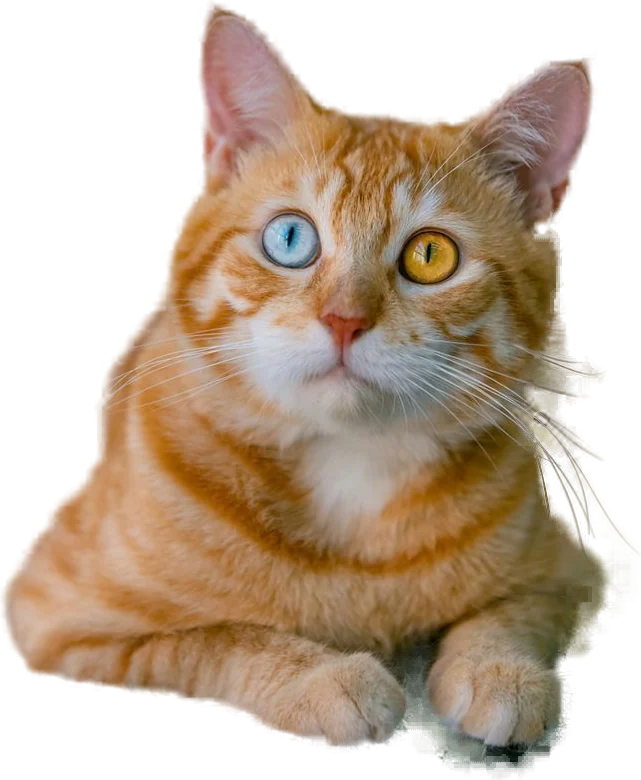

Consulta y vacunación
Revisión general, vacunas y desparasitación. Las vacunas también te las ponemos a domicilio.
Agendá consultaCentro de Atención Veterinaria en San Pedro. Salud, estética y nutrición en un solo lugar, con emergencias 24/7.
Tenés activado «Reducir movimiento»: ves una versión sin desplazamientos. Tocá al dálmata · Hoja de muestra 4, no se publica
El azul rey de «El segundo hogar» ahora es el cielo de toda la página. Encima juegan peluditos dibujados a mano: un dálmata que persigue la pelota y una gata que vigila todo desde las letras. No son fotos de banco: son personajes que solo tiene Pets & Health.
Los mismos de la propuesta 3, con otro reparto: el azul rey manda, el marino dibuja y el menta sigue siendo lo que se toca.
Salud de pies a patitas
Gabarito muy negra para los titulares. Las letras saltan a su lugar, un garabato menta subraya la palabra que importa y la pelota hace de punto.
El segundo hogar de tu mascota
La misma letra para los títulos de sección.
Mientras vos trabajás o te vas de vacaciones, tu peludito se queda en Canino Real: un ambiente seguro, con juegos, mimos y un veterinario siempre cerca.
Y para leer, blanca sobre el azul rey.
Dos personajes dibujados para Pets & Health: el dálmata sale de la foto que te gustó en la propuesta 3 y la gata, del michi de ojos de dos colores.
Si alguna foto de tus pacientes sirve, va recortada sobre un círculo claro, con la cabeza saliéndose del borde y garabatos encima. Así convive con los dibujos y no parece de banco.

Cada pocos segundos la pelota del titular rebota dos veces, como un latido, y el botón late con ella. Lo que deja dibujado al rebotar es la línea del monitor.
Menta con letra marino, borde dibujado y sombra de sticker. Al tocarlo se hunde, como apretar un juguete. Siempre dice lo mismo: Agendá.
Revisión general, vacunas y desparasitación. Las vacunas también te las ponemos a domicilio.
Agendá consultaDe noche, en feriado o un domingo: si tu peludito tiene una emergencia, llamanos de una. No esperés a que abramos.
Llamar al 2253-4184